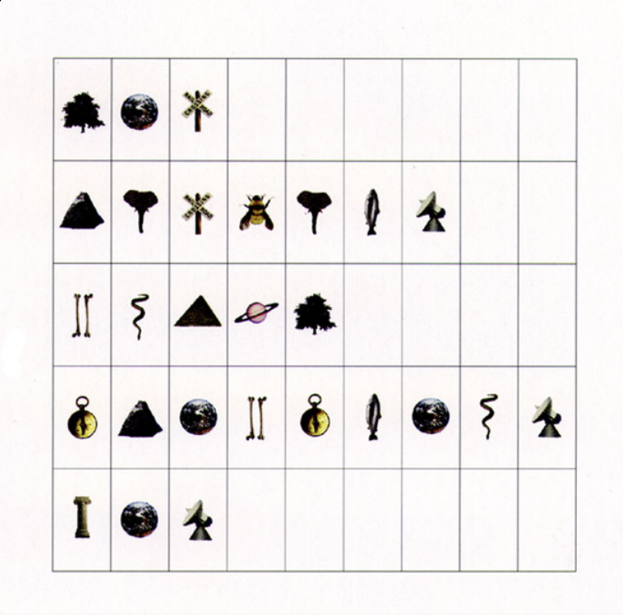

Follow Me Transcription (Pat Metheny)
I love playing this piece (the second track of the Pat Metheny's 1997 Album, Imaginary Day ) in solo guitar settings. Pat Metheny is just so cool in the way he really writes as a guitarist, not just for guitar if that makes sense. So many of this songs are like this, playable, expressive, full of harmonic depth without being unnecessarily dense, and leveraging the guitars natural tendency to exploit different tonalities at the same time (all those open strings).
My favourite thing here is how he creates harmonic movement. Like that progression from C major to Ebmaj7♭5 to Fmaj7♭5. It sits across a few keys, butflows so naturally because of that smooth voice leading and triadic clarity. Typical of so many of his compositions, there aren’t complex voicings with lots of extensions; just simple, open structures that resonate clearly. So the effect of it all is kind of get to play in G major, E minor, C major, even Eb major.
So often with modern stuff, it is all about destabilising the key centre through dissonance, chromaticism, or rapid modulation. But here, it is the opposite - tonal ambiguity through consonance. Gentle, spacious, and modal, classic Pat Metheny sound.
Here is the chart in
PDF or
MuseScore